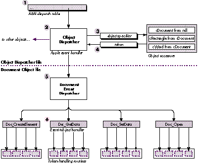
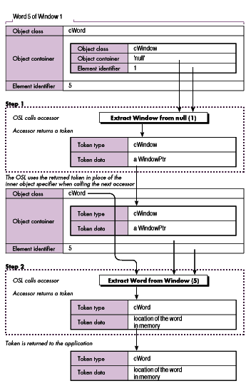

With Apple events, Apple has opened the door for applications to control each other and
work collaboratively. However, before applications can communicate, they have to
agree on the commands and data they'll support. Apple event objects form the basis of
such a protocol--the Apple event object model. The object model is powerful, but still
a source of confusion for many developers. This article provides an overview of the
object model and answers several commonly asked questions, including "What is the
Apple event object model?" and "How do I support it?"
One of the greatest strengths of the Macintosh--its graphical user interface--is also
the basis of one of its greatest weaknesses--the difficulty of automating routine or
repetitive tasks. "Give us batch files!" many users cried. The developers responded
with macro programs such as QuicKeys and Tempo, which handle many of the routine
tasks but can't always make a program doexactly what the user wants.
The problem is that macro programs are generally limited to manipulating an
application's human interface and have limited information about the state of the
application. This means that if some setting has been changed or something has been
moved, running a particular macro might not have the desired effect. In other words,
one Macintosh application cannot control another application reliably through the
target application's human interface.
For one application to control another application reliably, all of the following must
happen:
On the Macintosh, Apple events and theApple Event Registry provide the standards that
allow applications to control each other reliably. The Apple event, a standard protocol
for sending commands and data between applications, was introduced as part of System
7. TheApple EventRegistry defines standard Apple event commands and two standard
data types--Apple event object andprimitive. Apple event objects describe an
application's internal data, and primitive types describe the data that can be sent
between applications. In essence, the Registry forms the basis for a standard language
that applications can use when sending or receiving Apple events.
One of the challenges in creating theApple Event Registry was to keep the set of
commands small while providing an adequate level of control between applications. The
Registry does this by allowing the same command to apply to different Apple event
objects within an application. The application of Apple events to Apple event objects is
commonly referred to as theApple event object model.
This article provides an overview of the object model and then discusses how you can
add object model support to your application. The fundamentals of Apple events are
given inInside Macintosh Volume VI.
The Apple Event Registry defines an application's programmatic interface as a series
of Apple event objects, where each object belongs to a particular object class. Each
Apple event object is comprised of some data and a set of Apple event commands that
operate on that data. In a traditional object- oriented fashion, new classes are defined
by taking an existing class and adding new data and/or commands. Related classes are
grouped together intosuites.
The most commonly used objects (and their associated commands) are grouped together
into the Apple eventcore suite. The commands in the core suite, which include Create
Element, Delete, Get Data, and Set Data, cover the basic operations for any given
object. The Apple event objects defined within the core suite include documents,
windows, and the application itself. The core suite also includes some primitive classes
such as long and short integers, Boolean values, and text. Every object model-aware
application should support the core suite, and all Apple event objects defined within
your application should support the core suite events.
The data portion of an Apple event object is broken into two parts: the
object'sproperties and itselements:
For more detail on the difference between a property and an element, see "Properties
and Elements."
Figure 1 shows three object classes that we'll use throughout the article; they've been
derived from theApple Event Registry and simplified for the purpose of illustration.
Figure 1 Some Hypothetical Apple Event Object Classes
Each Apple event object contains exactly one of each of its properties (each of which
has a name), so you might ask for the "Bounds of the frontmost Window" and receive
back the pBounds property of the specified window. An object can contain zero or more
of each of its element classes (each of which has a name), so you could ask for "every
Paragraph in Document 1," where Paragraph is a valid element class for the document.
Many developers want to know when you should declare something as a property and
when you should declare it as an element. You should make something (call it x ) a
property of an object when x describes something about that object. You should make
something else (call it y ) an element of an object if y is contained within the object.
Some developers use the rule "If there's only going to be one y in the object, make it a
property." Alas, this rule isn't always correct. Let's assume that an application could
display only one document window at a time. Should that document be an element or a
property? According to the Registry's definition of an element, since the document is
contained within the application, you should make it an element. If you make something
an element based simply on the Registry's definition, your new classes will be
consistent with the existing classes.
Another useful test is to ask "Can I delete this item?" If you can, it's not a property.
(You can delete a window from within an application, so a window is an element of that
application, not a property. But since you cannot delete the bounds of the window, the
bounds is a property.)
Most of the Apple events defined in theApple Event Registry contain one or moreobject
specifiers as parameters. An object specifier is similar to the instructions you might
give someone who's looking for a particular house: turn left at the first signal, then
look for Jones Street and turn right, then travel down to the third house on the right.
Object specifiers can also be used to specify a group of objects--for example, every
green house on Jones Street.
Or imagine you send an Apple event-aware word processor the object specifier "every
Paragraph in the current Document that contains the Word 'Apple'." The application
would search in stages, first finding the current document and then searching through
the paragraphs one at a time to see if they contained the word "Apple." Object
specifiers provide a powerful general mechanism for locating a particular object in an
application.
The Apple event's direct parameter typically contains the object specifier, yielding
such commands as "Close Document 3" and "Delete Word 3 of Document 'fred'." Passing
an object specifier as part of a command allows the same command to be reused for
different objects (Newwindow , Newdocument , or Newrectangle ) instead of inventing
a unique command for each action-object pair (NewWindow, NewDocument, or
NewRectangle).
Internally, an object specifier consists of a series of recursive "get a particular
element of classx from objecty " commands. For example, in the command "Close
Document 1," the object specifier (Document 1) is represented as "the first object of
class Document contained within the Application." Another way of looking at this is
"(the first object of class Document in (the Application))" where the parentheses
represent one object specifier embedded within another. In addition to specifying a
single element, an object specifier can refer to a property of some object or to a set of
objects. For example, your application may receive the object specifier for "the
Bounds of Window 1" or "every Icon contained within Rectangle 1 of Window 5."
Figure 2 shows a simplified representation of two object specifiers. Object specifiers
are stored as Apple event records, with one field each for the object class and the
object's container (stored as a handle) and two fields for theelement identifier . The
two fields of the element identifier together represent the specific element to be
selected. In part A of Figure 2, the desired object class is cDocument, the container is
'null' (in other words, a descriptor that has type typeNull and a nil handle), and the
element identifier is 1. The null container typically represents the application. In
part B, the desired object class is cWord, the container is a handle to the object
specifier from part A, and the element identifier is 5.
Figure 2 Simplified Representation of Object Specifiers
An actual object specifier is slightly more complicated than the ones shown in Figure
2. In the examples given above, we've consistently referred to elements by number.
However, you might want to refer to some object, such as a document, by name. In that
case you would need to know that the two fields of the element identifier contain akey
form and some key data.
Each different way you can refer to an element uses a different key form. When we
refer to an element by number, we're using the "absolute position" key form. We could
also specify a "name" key form, a "property" key form (to get a property of an object
instead of one of its elements), and so on. A complete object specifier is shown in
Figure 3. A list of all standard key forms is given in the Apple Event Registry and in
the Apple Event Manager chapter of the new, improvedInside Macintosh (preliminary
draft) on theDeveloper CD Series disc.
Figure 3 The Four Fields of an Object Specifier
One of the side effects of the object model is that the same command will be executed
differently depending on the type of object involved. Therefore the object class, event
class, and event ID are required before you can dispatch an Apple event. Since the
Apple Event Manager uses only two of these values when dispatching an Apple event
(the event class and event ID), you'll need to write some additional dispatching logic.
We'll discuss three major ways of dispatching object-model Apple events: an
event-first approach, an object-first approach, and a method that uses a lookup table
to dispatch the events. These approaches all serve the same function--extracting an
object specifier and using the combined object class, event class, and event ID to select
one of the application's routines. They differ only in the way you structure your code.
AN EVENT-FIRST APPROACH
The event-first approach allows the Apple Event Manager to do most of the work. The
Apple Event Manager calls a different handler for each event--for example, Get Data
and Set Data--and that handler calls different routines depending on the object class
given by the object specifier. Figure 4 and the following sample code illustrate this
approach.
pascal OSErr AESetDataHandler (AppleEvent *message,
AppleEvent *reply, long refCon)
{
OSErr err;
AEDesc theObject, theToken;
err = AEGetKeyDesc(message, keyDirectObject, typeObjectSpecifier,
&theObject);
if (err != noErr) return err;
err = AEResolve(&theObject, kAEIDoMinimum, &theToken);
AEDisposeDesc(&theObject);
if (err != noErr) return err;
/* The token is an Apple event descriptor. For now, we can */
/* assume that the token's descriptor type is the class of the */
/* object that should handle this event. */
switch (theToken.descriptorType) {
case cWindow: case cDocument:
err = Win_SetData(&theToken, message, reply);
break;
case cRectangle:
err = Rect_SetData(&theToken, message, reply);
break;
case cWord:
err = Word_SetData(&theToken, message, reply);
break;
default:
err = errAEEventNotHandled;
}
AEDisposeDesc(&theToken);
return err;
}
An application that processes events using the event-first approach goes through the
following steps after it receives an Apple event and calls AEProcessAppleEvent (the
numbers correspond to the numbers in Figure 4):
Figure 4 Event-First Approach to Dispatching Apple Events
Since many of the things you can do with a token fall into a few basic operations, such
as reading, writing, inserting, or deleting the information represented by a token, you
can choose to write a set of token-handling routines for each token type that you define.
Token-handling routines are not required, but they are useful. (See the section "What
Are Token-Handling Routines?" for more information.)
Due to its simplicity, the event-first approach is recommended for all applications
written in a procedural programming style (as is typically done in C or Pascal). Its
only real drawback is that if you add a new object class to your application, you have to
modify a number of Apple event handlers to recognize the new class (one handler per
event that the new object class supports).
If you have code spread across several source files, consider whether this could
present a code maintenance problem. If so, the object-first approach might work
better for your application.
AN OBJECT-FIRST APPROACH
You can limit the amount of work required when adding a new object class by making
each object class a self-contained unit. In this approach, an individual file (or group
of files) contains all the code required to implement a single object class, including the
event-dispatching code, object accessors, and token handlers. (For more information
on token handlers, see the section "What Are Token- Handling Routines?")
Since the object includes its own event-dispatching code, you don't usually install a
separate handler for each individual Apple event. Instead, you install one or more
wild-card handlers that route the event to the appropriate object using the following
algorithm:
Since most Apple events carry their object specifiers in the direct parameter, a single
wild-card handler works for all of these Apple events. However, there are some events
that carry their object specifiers in different places, so you need to install specific
handlers for these events. (For example, the Create Element event carries its object
specifier inside an insertionLoc structure.) Using a single handler that uses the first
object specifier it finds is inadequate, since some events use multiple object specifiers
and an object specifier can appear anywhere another parameter can.
The handler that extracted the object specifier passes the token, the message, and the
reply event to the object's central event dispatcher. This dispatcher then calls the
appropriate routine, which typically calls one or more token-handling routines. This
approach is illustrated in Figure 5 and in the following sample code.
/* This is a typical Apple event handler that you install using */
/* a wild card (in this case, the class = 'core', and the event */
/* ID = '****'). This would go in a "common area" file, */
/* separate from the individual object implementation files. */
pascal OSErr AECoreSuiteHandler (AppleEvent *message,
AppleEvent *reply, long refcon)
{
OSErr err;
AEDesc directParam, theToken;
/* The following code works for all core Apple events except */
/* Create Element. Either this routine would need to be */
/* modified for Create Element, or a specific handler */
/* installed. */
err = AEGetKeyDesc(message, keyDirectObject, typeWildCard,
&directParam);
if (err != noErr) return err;
if (directParam.descriptorType == 'null') {
/* AEResolve doesn't like null descriptors, so skip it. */
theToken = directParam;
}
else {
err = AEResolve(&directParam, kAEIDoMinimum, &theToken);
AEDisposeDesc(&directParam);
if (err != noErr) return err;
}
/* We assume the token's type is the class that handles this */
/* event. */
switch (theToken.descriptorType) {
/* Include one entry for each object class. */
case 'null':
/* This is the application object's token class. */
err = AppEventDispatcher(&theToken, message, reply);
break;
case cDocument:
/* See the example of this routine below.*/
err = DocumentEventDispatcher(&theToken, message, reply);
break;
/* And so on for cRectangle, cWord, etc. */
default:
err = errAEEventNotHandled;
}
AEDisposeDesc(&theToken);
return err;
} /* AECoreSuiteHandler */
/* ===In the Document Object file...=== */
OSErr DocumentEventDispatcher (AEDesc *theToken,
const AppleEvent *message, AppleEvent *reply)
{
OSErr err = noErr;
AEEventID eventID;
OSType typeCode;
Size actualSize;
/* Get the event ID. */
err = AEGetAttributePtr(message, keyEventIDAttr, typeType,
&typeCode, (Ptr)&eventID, sizeof(eventID), &actualSize);
if (err != noErr) return err;
switch (eventID) {
case kAECreateElement:
err = Doc_CreateElement(theToken, message, reply);
break;
case kAEGetData:
err = Doc_GetData(theToken, message, reply);
break;
/* And so on for Set Data, Delete, Open, Close, Print, */
/* etc. */
default:
err = errAEEventNotHandled;
}
return err;
} /* DocumentEventDispatcher */
When an event is processed using the object-first technique, the application takes the
following steps after it receives an Apple event and calls AEProcessAppleEvent (the
numbers correspond to the numbers in Figure 5):
This approach, or some variant of it, could be implemented using object-oriented
programming and is recommended for object-oriented applications.

Figure 5 Object-First Method for Dispatching Apple Events
If you use the object-first approach in a procedural application, you can still get some
of the benefits of object-oriented programming, since this technique can be used to
implement a simple form of inheritance for Apple event objects. If a particular
object's event dispatcher doesn't recognize an event, it can pass the event to its
superclass's event dispatcher. If that dispatcher doesn't recognize the event, the
request can be passed up the chain until the topmost dispatcher is reached (typically
cObject). This minimizes the code required for adding a new object, since an object
only needs to implement its unique events (and any standard events that it handles
differently) and can pass all other events to its superclass.
One drawback to this approach is the overhead involved in dispatching the event. Each
event goes through the Apple Event Manager, AEResolve, a pair of switch statements
(one in the top-level Apple event handler, and another in the object's dispatch
routine), and possibly a couple of superclassevent dispatchers. Still, each of our
approaches requires the initial use of the Apple Event Manager and a call to AEResolve,
so the added overhead lies primarily in the switch statements.
Another drawback is that each Apple event typically has several parameters, and each
Apple event handler needs to extract the set of Apple event-dependent parameters for
that Apple event. This can lead to redundant code.
TABLE-BASED DISPATCHING
One way to lower the overhead associated with dispatching object-model Apple events
involves building a dispatch table of your own to replace the Apple Event Manager's.
The Apple Event Manager constructs a two-way hash table based on the event class and
event ID. Since this isn't enough information to properly dispatch an object-model
Apple event (you also need to know which object class will be responsible for handling
the event), the solution is to construct your own table using a three-part index (event
class, event ID, and object class) that contains the addresses of the appropriate
routines.
As in the object-first example, this dispatcher should be "attached" to the Apple Event
Manager through a wild-card handler in the Manager's regular dispatch table. (This is
necessary since there's no other robust way to "unpack" an Apple event when it
arrives from the outside world.) This handler would extract the event class and event
ID attributes and would get the object specifier from the direct parameter. The handler
would then call AEResolve and pass the object class (along with the event class and
event ID) to your table lookup routine.
The only real problem occurs when the object specifier isn't contained in the direct
parameter. The solution here is to install handlers for any events that don't contain
their object specifiers in their direct parameters, and have these handlers call
AEResolve and then jump directly into your table lookup routine.
The implementation of such a table-based dispatcher is left to you.
When an object-model Apple event is received, such as "Close Document 1," the object
specifier (Document 1) is usually contained in the direct parameter of the event.
Before the event can be processed, the object specifier needs to beresolved. Resolving
an object specifier involves locating the specified information in memory so that the
Apple event can act on this information.
While it's possible to parse an object specifier directly, object specifiers can be much
more complicated than the simple examples shown here. The Apple event Object
Support Library (OSL) helps you resolve an object specifier through a set ofobject
accessor routines, which you write and then install. One type of accessor routine
extracts one or more types of element from a given object, while other accessor
routines extract a property from an object. When you ask the OSL to resolve an object
specifier, it calls the appropriate accessor routines in the necessary order.
Figure 6 shows how the OSL resolves the object specifier "Word 5 of Window 1."
First, the accessor for the innermost specifier (Window 1) is called. This accessor
returns a token, which is an Apple event descriptor (AEDesc) referring to some data
in your application. The returned token and the next part of the object specifier to be
processed are then passed to the appropriate accessor. This process is repeated until
the object specifier has been fully resolved, and the final result is returned to your
application.

Figure 6 Object-First Method for Dispatching Apple Events
Each accessor routine should accept one part of an object specifier and return a token.
An accessor routine has the form
pascal OSErr MyAccessor (DescType desiredClass,
const AEDesc *container, DescType containerClass,
DescType keyForm, const AEDesc *keyData,
AEDesc *value, long refCon);
and is passed the desiredClass, containerClass, keyForm, and keyData fields directly
from the part of the object specifier being resolved. The container is either the token
returned from the last accessor called or an AEDesc of type 'null' containing a null
handle (if this is the first accessor in the series to be called).
All accessors have to perform essentially the same functions:
Check that the specified key form is valid.
The following code illustrates this process using a simple "extract a Window from a
null container" accessor. (In most applications, this accessor extracts both windows
and documents from the null container since most applications maintain a one-to-one
correspondence between documents and windows.)
pascal OSErr WindowFromNull (DescType desiredClass,
const AEDesc *containerToken, DescType containerClass,
DescType keyForm, const AEDesc *keyData, AEDesc *theToken,
long theRefcon)
{
WindowPtr wp;
long count;
/* 1. Make sure we can handle this request. We only handle */
/* object specifiers of the form "Window 1", "Window 2", etc. */
if ((keyForm != formAbsolutePosition) return errAEBadKeyForm;
/* 2. Extract the window number and find the window. */
count = **(long**)(keyData->dataHandle);
wp = FrontWindow();
while (count > 1) {
if (wp == 0L) return errAENoSuchObject;
wp = (WindowPtr)((WindowPeek)wp)->nextWindow;
--count; /* Count down by 1. */
};
/* 3. Create the token. */
/* The token is an AE descriptor of type 'cwin' (window). */
/* The AEDesc contains a handle to a WindowPtr. */
return AECreateDesc(desiredClass, (Ptr)&wp, sizeof(wp),
theToken);
} /* WindowFromNull */
While the above code contains many of the features of an object accessor, it's far from
complete. For example, it doesn't handle formName, which is one of the more common
key forms. It also assumes that the value for a formAbsolutePosition parameter will be
a positive integer. In fact, the value could be a negative number (with -1 signifying
the last element of the container, -2 signifying the next to the last element, and so
on), or one of the special constants representing the first, last, middle, any, or every
element of the container.
To make the formAbsolutePosition code complete, you need to add a routine that looks at
the key data for one of the special values and converts the key data into a positive
integer or returns a flag indicating that every element should be returned. Such a
routine would look something like this:
OSErr GetWindowIndex (const AEDesc *keyData, long *index,
Boolean *getAll)
{
long numWindows;
long rawIndex;
/* There are three flavors of formAbsolutePosition key: */
/* typeLongInteger/typeIndexDescriptor, */
/* typeRelativeDescriptor, and typeAbsoluteOrdinal. */
/* 1. Initialize some values. */
*getAll = false; *index = 1;
numWindows = CountUserWindows(); /* A private routine */
/* 2. Get the number out of the key. If it's not an absolute */
/* value, convert it to one. */
rawIndex = **(long**)(keyData->dataHandle);
switch (keyData->descriptorType) {
case typeLongInteger:
if (rawIndex < 0)
/* A negative value means "the Nth object from the */
/* end," */
/* i.e., -1 = the last object. */
rawIndex = numWindows + rawIndex + 1;
/* A positive value is an absolute value, so do */
/* nothing. */
break;
case typeAbsoluteOrdinal:
/* kAEFirst, etc. are special 4-byte constants. */
if (rawIndex == kAEFirst) rawIndex = 1;
else if (rawIndex == kAELast) rawIndex = numWindows;
else if (rawIndex == kAEMiddle)
rawIndex = numWindows / 2;
else if (rawIndex == kAEAll) *getAll = true;
else if (rawIndex == kAEAny) {
/* Select a random window. */
if (numWindows <= 1) /* 0 or 1 */
rawIndex = numWindows;
else
/* Get a random number between 1 and numWindows. */
rawIndex =
1 + ((unsigned long)Random() % numWindows);
}
else return errAEBadKeyForm;
break;
}
return noErr;
} /* GetWindowIndex */
To install an accessor, use the AEInstallObjectAccessor routine:
pascal OSErr AEInstallObjectAccessor (DescType desiredClass, DescType containerType, accessorProcPtr theAccessor, long accessorRefcon, Boolean isSysHandler)
In the "extract a Window from a null container" example, the call to the
AEInstallObjectAccessor routine would look like this:
err = AEInstallObjectAccessor(cWindow, 'null',
(accessorProcPtr)WindowFromNull, 0, false);
You can also install accessor routines to get one of the properties of an object (use the
special constant 'prop' in specifying the desired type), or you can supply a wild card
for either the container or the desired type. Most developers install one accessor
routine for each of the element types supported by a particular object, and one
accessor routine to handle all of the properties of that object.
As noted earlier, accessors communicate with each other and with the application using
application- specifictokens . Most Apple events that contain an object specifier end up
resolving the object specifier into a token and then manipulating the data represented
by that token. Since the format of each object class is different, you'll typically write
Read Token Data and Write Token Data routines for each object class that your
application supports. (You might also choose to write Create Token Data (Create
Element) and Delete Token Data routines if more than one Apple event in a given object
needs to create or delete information.) What you put into these token-handling
routines depends completely on the contents of your tokens.
Each token is stored in an Apple event descriptor--a data structure containing a
4-byte type code and a handle to some data, where the contents of the handle are
completely up to you. While this raises the question of what should go into the handle,
many developers decide to invent a different token data type for each object class or set
of related object classes.
In this approach, a window token would contain a WindowPtr, a text token would
contain a handle to some text, and so on. Since tokens are used for both elements and
properties, each token might also contain a 4-byte property code.
Here's how the tokens might look for the object classes defined in Figure 1:
struct DocumentTokenBody {
WindowPtr theWindow;
Boolean useProperty;
DescType propertyCode;
};
struct RectTokenBody {
Rect *theRect; /* Use a pointer so we can read */
/* and write the rectangle. */
long elementNumber; /* See token-handling examples */
/* below. */
Boolean useProperty;
DescType propertyCode;
WindowPtr parentWindow; /* The window that holds this */
/* rectangle. */
};
struct WordTokenBody {
Handle theText;
long startingOffset; /* How many bytes in does the */
/* text start? */
long textLength; /* How many bytes long? */
Boolean useProperty;
DescType propertyCode;
TEHandle parent; /* The location from which we */
/* took this text. */
};
These three sample tokens demonstrate several things you should keep in mind when
designing your own tokens:
The guidelines given above cover the contents of the token's handle, but they don't say
anything about the descriptorType field. When you return a token from an accessor
routine, you must put the proper type code into the descriptorType field of the AEDesc.
This is required because the OSL uses the returned token type from one step of the
resolution process to guide the next step. Having the accessor routines control the
resolution process actually insulates outside Apple event sources from having to know
about your specific implementation details.
Throughout the article, we've assumed that the token type in the token is the same as
the external data type specified by the object specifier. However, your code can put
anything in the token type field as long as you write the matching object accessors for
those token types.
For example, let's say that you've written a word-processing program, and another
application sends the request "Get DataWord 2 of Paragraph 2 of Window 1 " where the
italicized part is an object specifier. The returned type would probably be some styled
text. However, if the requester had sent "Get DataWord 1 of the Name of Window 1 ,"
your application would have to access a completely different form of text (a simple
Str255) and might return some nonstyled text.
Internally, the data type that represents text within a document can be different from
the data type representing a simple string. Instead of forcing the user to use two
different terms for the same thing (documentWord and plainTextWord, perhaps), the
application can make this determination at run time. Figure 7 shows how an
application might resolve the two examples given above.
Token-handling routines are optional routines (in other words, routines not
explicitly required by the object model or OSL) that perform common editing
operations on the data referred to by a token. Generally, when you have a token, you
want to read, write, insert, or delete the data the token refers to. Here are Read Token
Data and Write Token Data handlers for the cRectangle object class:

Figure 7 Controlling Object Specifier Resolution with Returned Tokens
struct RectTokenBody {
Rect *theRect; /* Use a pointer so we can read */
/* and write the rectangle. */
long elementNumber;
Boolean useProperty;
DescType propertyCode;
WindowPtr parentWindow;
/* The window that holds this rectangle. */
};
typedef struct RectTokenBody RectTokenBody;
typedef RectTokenBody *RectTokenPtr, **RectTokenHandle;
OSErr ReadRectToken (const AEDesc *theToken, AEDesc *result)
{
/* This routine gets called by the Get Data Apple event handler */
/* (or any other handler that needs to read some data and possibly */
/* return it to the user). If the useProperty flag is true, we */
/* return the requested property, otherwise we return the default */
/* representation for this class (we'll use the cQDRect primitive */
/* type for this). */
RectTokenPtr tokenPtr;
DescType descCode;
OSErr err;
HLock(theToken->dataHandle);
tokenPtr = (RectTokenPtr)*theToken->dataHandle;
if (tokenPtr->useProperty) {
switch (tokenPtr->propertyCode) {
case pClass:
/* Tell the world that this is a rectangle. */
descCode = cRectangle;
err = AECreateDesc(typeType, (Ptr)&descCode,
sizeof(descCode), result);
break;
case pBounds:
/* Return the bounds of this rectangle, as a */
/* QuickDraw rectangle. */
err = AECreateDesc(typeQDRectangle,
(Ptr)&tokenPtr->theRect, sizeof(Rect),
result);
break;
/* More property codes go here... */
default:
err = errAENoSuchObject;
}
}
else {
/* Return the default representation. In this simple */
/* example, it's a QuickDraw rectangle. */
err = AECreateDesc(typeQDRectangle, (Ptr)&tokenPtr->theRect,
sizeof(Rect), result);
}
return err;
}
OSErr WriteRectToken (const AEDesc *theToken, const AEDesc *theData)
{
/* This routine gets called by the Set Data Apple event handler */
/* (or any other handler that needs to change a property or some */
/* value of the object). If the useProperty flag is true, we */
/* check to see if the property is writable and modify it, */
/* otherwise we change the contents of this object. */
RectTokenPtr tokenPtr;
AEDesc thisRectDesc;
OSErr err;
HLock(theToken->dataHandle);
tokenPtr = (RectTokenPtr)*theToken->dataHandle;
if (tokenPtr->useProperty) {
switch (tokenPtr->propertyCode) {
case pClass: /* This is a read-only property. */
err = errAEWriteDenied;
break;
case pBounds: /* Set the bounds of this rectangle. */
/* Make sure we have a QuickDraw Rectangle. */
err = AECoerceDesc(theToken, typeQDRectangle,
&thisRectDesc);
if (err != noErr) return err;
/* Copy the data into our rectangle. */
BlockMove(*thisRectDesc.dataHandle,
&tokenPtr->theRect, sizeof(Rect));
AEDisposeDesc(&thisRectDesc);
break;
/* More property codes go here... */
default:
err = errAENoSuchObject;
}
}
else {
/* Change the default representation (the bounds of this */
/* rectangle). */
err = AECoerceDesc(theToken, typeQDRectangle, &thisRectDesc);
if (err != noErr) return err;
/* Copy the data into our rectangle. */
BlockMove(*thisRectDesc.dataHandle, &tokenPtr->theRect,
sizeof(Rect));
AEDisposeDesc(&thisRectDesc);
}
return err;
}
The contents of the Create Element and Delete Token Data routines are completely
application- specific and are not illustrated here. Typically, the Create Element
routine takes a token for the element's container and an index position within that
container, and returns an object specifier describing the new element. (This object
specifier may be returned as the result of a Create Element Apple event, or may be
resolved so that you can insert some data into the newly created element.)
Once you've created the object event dispatcher code, the object accessor routines, the
token formats, and the token handlers, your last task is to write the actual
event-handling routines. (These are different from the routines that you install into
the Apple Event Manager's dispatch table; event-handling routines do the work for a
specific event as handled by a specific object class.) While the exact content of these
routines is application dependent, they do have some features in common:
Writing an object model application isn't difficult; once you've implemented an object
or two (including the accessors and tokens) and a couple of events, you should have a
good understanding of the issues. I hope that this article has given you a good idea of
where and how to begin adding the object model to your application. If you still need
help there are several options: reading the related documentation (see the box below);
looking at the sample code on theDeveloper CD Series disc (the samples Quill and
AEObject-Edition Sample in the Apple Events and Scripting Development Kit and the
sample code provided with this article); talking with other programmers; training
through Apple's Developer University; and using the on-line support available
through AppleLink, CompuServe, and other means.
Good luck! We all look forward to seeing the exciting things that can be done when
applications can work both cooperatively and under the control of scripting
environments.
RICHARD CLARK, an instructor and course designer in Apple's Developer
University, is no stranger to projects both large and small. (He claims that both of his
recent projects--the new Advanced System 7 class and Daniel Guy Clark--took around
nine months and developed a life of their own.) When he's not playing with his new
son, you can find him dancing in local Renaissance Faires, stunt kite flying, searching
for the ultimate chocolate recipe, and dreaming up horrible new puns.*
Concepts from object-oriented programming (notably inheritance--the
process of defining new classes in terms of other classes) are used in defining the
Apple event object model, but supporting Apple event objects does not require the use
of an object-oriented language or class library. You can use any language or
implementation technique you want, as long as your application can understand the
Apple events sent to it. *
In addition to the core suite, the Apple Event Registry includes other
specialized suites for text processing, database manipulation, manipulating QuickDraw
graphics, and the like. Application developers can define their own custom Apple event
object classes and suites and submit them to the Apple Events Developer Association
for standardization. *
For source-code samples that use the event-first technique, see the samples Quill
and AEObject-Edition Sample in the Apple Events and Scripting Development Kit on the
Developer CD Series disc.*
The cRectangle class used in this code is simplified. Remember that if you're
implementing the real cRectangle class from the Apple Event Registry , you'll need to
support many more properties and a more complex default representation. *
THANKS TO OUR TECHNICAL REVIEWERSKevin Calhoun, Donn Denman, C. K.
Haun, Eric House, Bennet Marks *